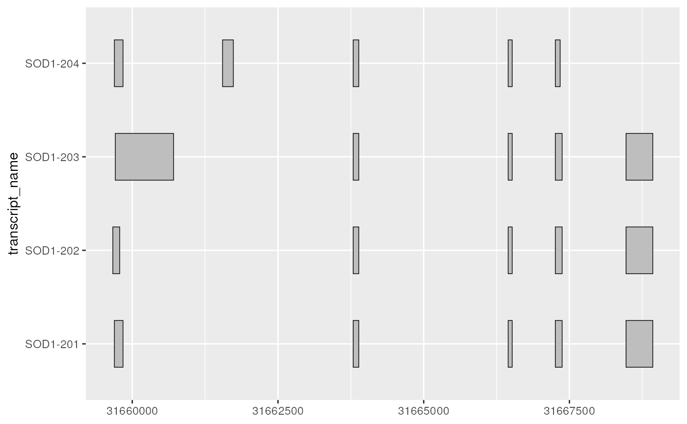

geom_range() draws blocks/tiles with a width specified by their xstart
and xend position. The other required aes, y, is expected to be a
character or factor (e.g. a transcript id/name). This geom is designed
to represent genomic annotations that cover a genomic range (e.g. exons,
CDS).
geom_range(
mapping = NULL,
data = NULL,
stat = "identity",
position = "identity",
...,
linejoin = "mitre",
na.rm = FALSE,
show.legend = NA,
inherit.aes = TRUE
)Arguments
- mapping
Set of aesthetic mappings created by
aes()oraes_(). If specified andinherit.aes = TRUE(the default), it is combined with the default mapping at the top level of the plot. You must supplymappingif there is no plot mapping.- data
The data to be displayed in this layer. There are three options:
If
NULL, the default, the data is inherited from the plot data as specified in the call toggplot().A
data.frame, or other object, will override the plot data. All objects will be fortified to produce a data frame. Seefortify()for which variables will be created.A
functionwill be called with a single argument, the plot data. The return value must be adata.frame, and will be used as the layer data. Afunctioncan be created from aformula(e.g.~ head(.x, 10)).- stat
The statistical transformation to use on the data for this layer, as a string.
- position
Position adjustment, either as a string, or the result of a call to a position adjustment function.
- ...
Other arguments passed on to
layer(). These are often aesthetics, used to set an aesthetic to a fixed value, likecolour = "red"orsize = 3. They may also be parameters to the paired geom/stat.- linejoin
Line join style (round, mitre, bevel).
- na.rm
If
FALSE, the default, missing values are removed with a warning. IfTRUE, missing values are silently removed.- show.legend
logical. Should this layer be included in the legends?
NA, the default, includes if any aesthetics are mapped.FALSEnever includes, andTRUEalways includes. It can also be a named logical vector to finely select the aesthetics to display.- inherit.aes
If
FALSE, overrides the default aesthetics, rather than combining with them. This is most useful for helper functions that define both data and aesthetics and shouldn't inherit behaviour from the default plot specification, e.g.borders().
Examples
example_exons <-
dplyr::tibble(
start = c(100, 300, 500, 650),
end = start + 100,
strand = c("+", "+", "-", "-"),
tx = c("A", "A", "B", "B")
)
example_exons
#> # A tibble: 4 × 4
#> start end strand tx
#> <dbl> <dbl> <chr> <chr>
#> 1 100 200 + A
#> 2 300 400 + A
#> 3 500 600 - B
#> 4 650 750 - B
base <-
ggplot2::ggplot(
example_exons,
ggplot2::aes(
xstart = start,
xend = end,
y = tx
)
)
base + geom_range()

base + geom_range(ggplot2::aes(colour = tx))